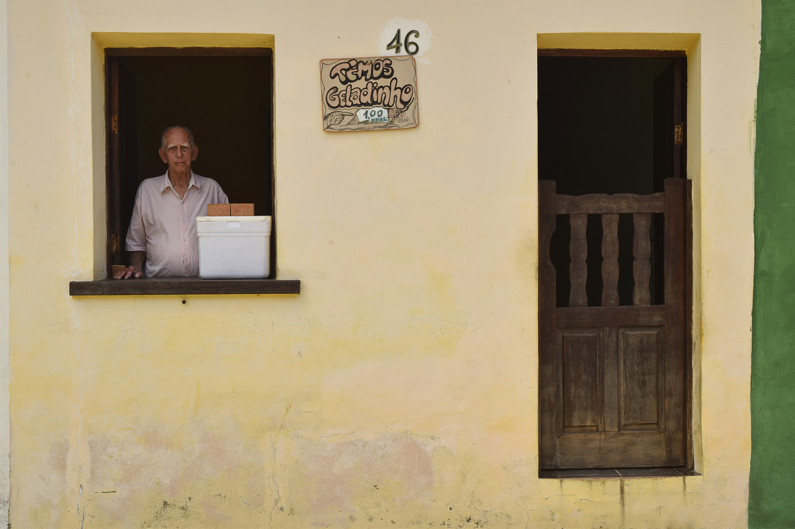
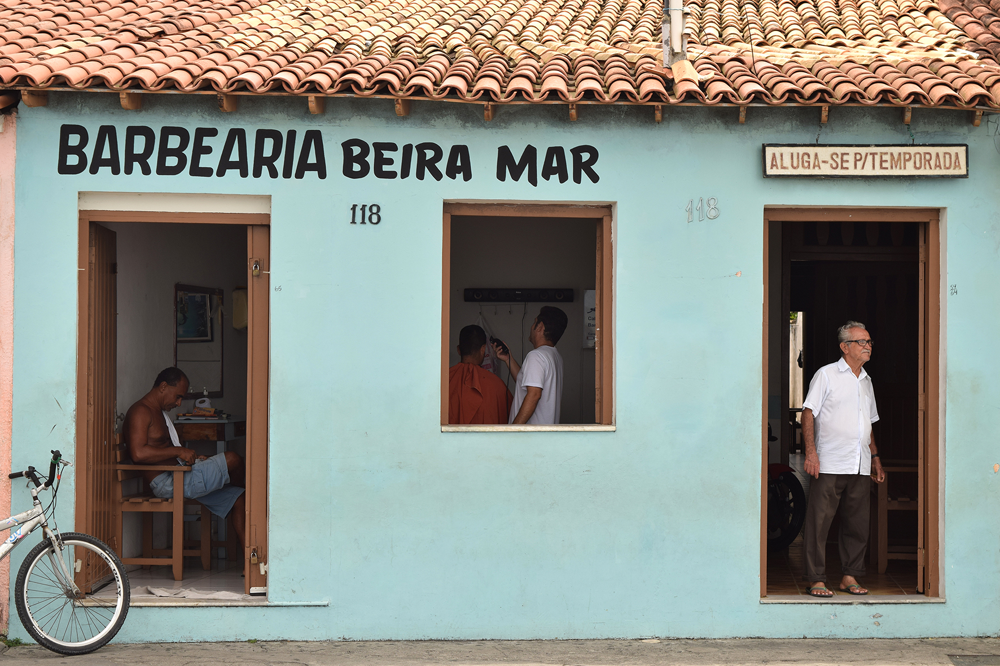
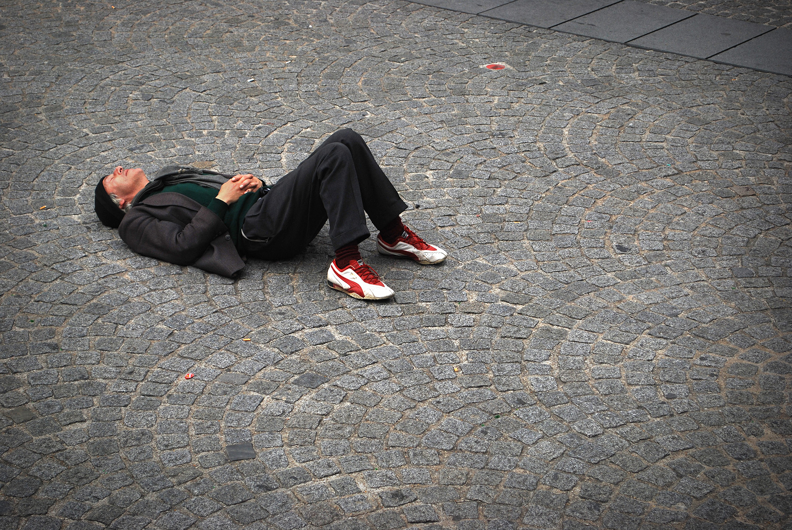
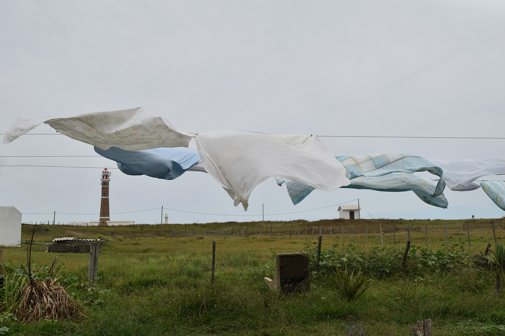
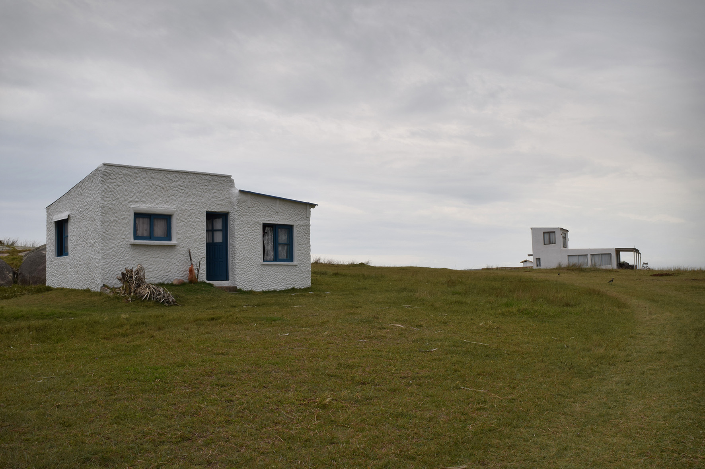
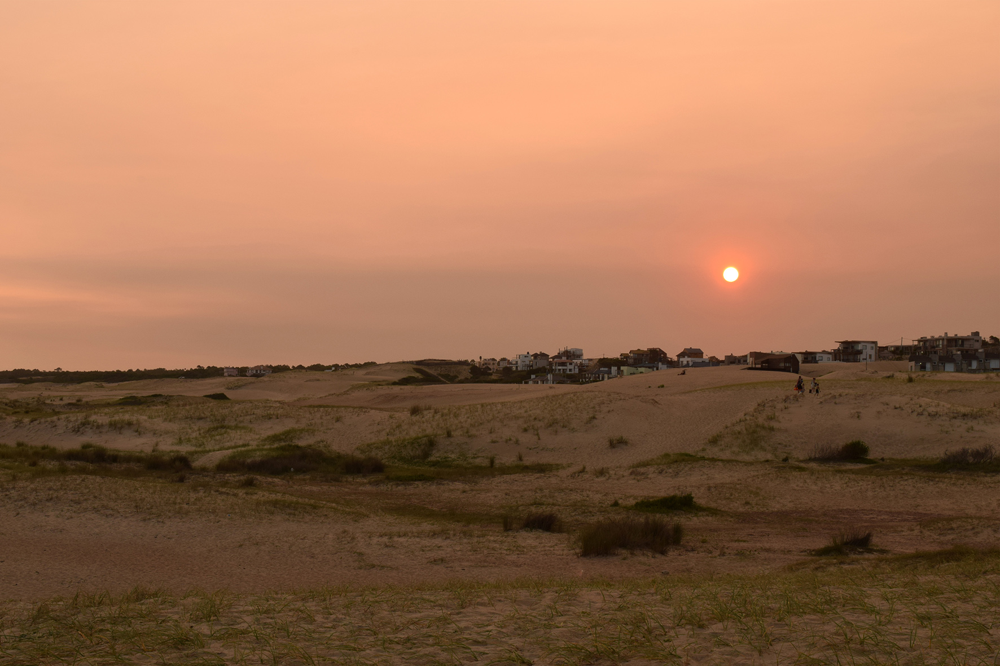

Personas

Arraial d'ajuda
Brasil / 2017

Arraial d'ajuda
Brasil / 2017
Amsterdam
Paises Bajos / 2011
Playa en Colón
Entre Ríos / 2013

En las calles de París
Francia / 2011
Lugares

Cabo Polonio
Uruguay / 2018

Cabo Polonio
Uruguay / 2018

Punta del Diablo
Uruguay / 2018
Monumento al Holocausto
Berlín / 2011